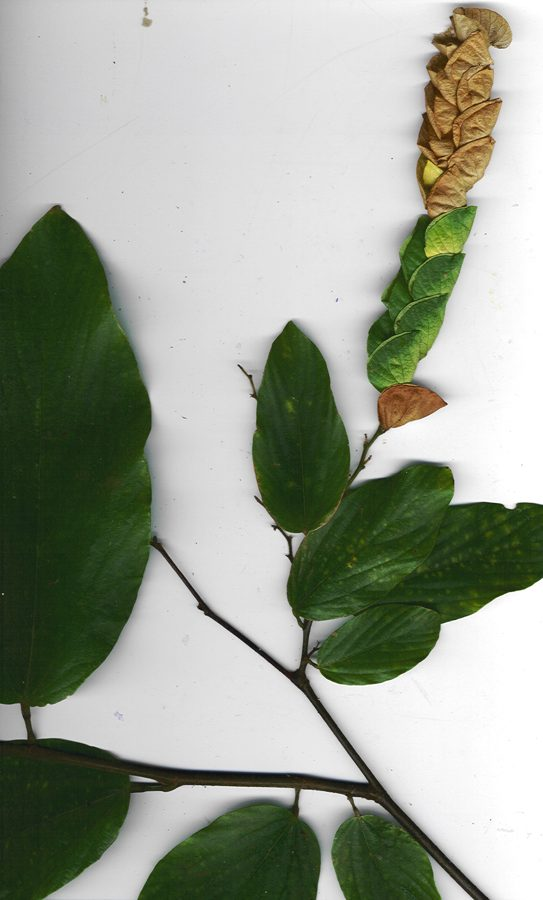

वाइल्ड हॉप्सWild Hops
Flemingia strobilifera · Fabaceae · FLR-0364

- Scientific name वैज्ञानिक नाम
- Flemingia strobilifera (L.) W.T.Aiton
- Family कुल
- Fabaceae
- Hindi हिंदी
- वाइल्ड हॉप्स
- Local names स्थानीय नाम
- wild hops, waild haps, flemingia
- Status here यहाँ की स्थिति
- native
- Movement आवागमन
- Resident, here all year
- Known from कहाँ दर्ज
- Others have published records from the wider Awadh–Purvanchal plain, none yet from Basti–Ayodhya अवध–पूर्वांचल से दूसरों के प्रकाशित अभिलेख, बस्ती–अयोध्या से अभी नहीं
- IUCN IUCN
- not evaluated
- Review समीक्षा
- not yet reviewed
When to look कब देखें
Season not recorded. मौसम दर्ज नहीं।
Uses and possibilities उपयोग और संभावनाएँ
Drawn from the documented uses in the profile below, where each is labelled traditional, current or a research lead. All uses →
Tell it apart from इनसे अलग पहचानें
वाइल्ड हॉप्स / Wild Hops
Flemingia strobilifera (L.) W.T.Aiton — Fabaceae
वाइल्ड हॉप्स (जंगली हॉप्स) — यह नम और घने जंगलों के नीचे उगने वाली एक सुंदर काष्ठीय झाड़ी है। इसकी सबसे बड़ी खूबी इसकी फूलों की बालियां हैं, जो हॉप्स के फूलों की तरह लटकती हैं। इन बालियों में कागज जैसे हल्के भूरे या हरे गोल पत्ते (सहपत्र) एक के ऊपर एक तह बनाकर जुड़े रहते हैं, जिनके भीतर छोटे सफेद-गुलाबी फूल पूरी तरह छिपे रहते हैं। जाड़े के दिनों में जब यह झाड़ी इन अनूठी बालियों से लद जाती है, तो जंगल में बेहद खूबसूरत दिखती है।
Quick Identification त्वरित पहचान
| Feature | Description |
|---|---|
| Habit | Erect bushy perennial shrub with slender terete velvety branches |
| Leaves | Simple unifoliolate leaves, oblong or ovate-lanceolate, rounded at base, thinly silky beneath |
| Inflorescence | Characteristic zigzag racemes enclosed in two rows of folding hop-like bracts |
| Bracts | Large membranous deeply cordate reniform bracts, folded like clam shells over flowers |
| Flowers | Small yellowish-white or pink papilionaceous blossoms concealed entirely within bracts |
| Fruit | Small oblong turgid downy pod hidden inside the persistent papery bracts |
Field tip: Look in forest ravines and sal undergrowth for an upright shrub with zigzag flower sprays packed with overlapping heart-shaped papery bracts resembling the cones of beer hops.
हिंदी: जंगल की तलहटी में मिलने वाली यह झाड़ी अपनी अनोखी बालियों से पहचानी जाती है, जिनमें कागज जैसे मुड़े हुए पत्तों के अंदर छोटे फूल और फलियां पूरी तरह ढकी रहती हैं।
Morphology आकारिकी
| Measurement | Range |
|---|---|
| Growth form | Erect shrub, 6–10 ft. high (Hooker 1879) |
Flemingia strobilifera is an erect bushy shrub that forms dense clumps in the forest understory. The branches are slender, terete, striate, and covered with soft grey velvety pubescence. The leaves are simple (one-foliolate), subcoriaceous, ovate-lanceolate or oblong, rounded or subcordate at the base, and acute or acuminate at the apex. The upper surface is green and glabrescent, while the lower surface is thinly silky with prominently raised parallel erect-patent lateral veins. The petioles are short, erect-patent, and accompanied by scariose linear-subulate stipules.
The inflorescence is a distinctive terminal or axillary raceme with a slender, densely downy, zigzag rachis. Along this axis are arranged two alternating rows of large, membranous, short-petioled, deeply cordate, reniform bracts that fold over each other like overlapping clam shells. Each bract conceals a small cluster of tiny flowers. The calyx is downy, with linear-lanceolate teeth. The corolla is papilionaceous, whitish or greenish-yellow tinged with purple. The fruit is a small, oblong, turgid, downy two-seeded pod completely enveloped within the persistent papery bracts.
हिंदी: यह झाड़ी छह से दस फीट तक ऊंची होती है। इसकी टहनियां रोएंदार और पत्तियां नीचे से मखमली होती हैं। इसकी बालियों में सीप जैसे मुड़े हुए कागजी पत्ते होते हैं जो फूलों को ढक कर रखते हैं।
Behaviour & Ecology व्यवहार और पारिस्थितिकी
Wild hops is an understory specialist adapted to the dappled light and sheltered microclimate of sub-Himalayan sal and riverine ravine forests. Its root system forms extensive fibrous networks that bind soft woodland alluvium on sloping ravine banks, reducing soil erosion during heavy monsoon deluges.
The overlapping bracts serve an important protective function: they shield the delicate floral parts and developing young pods from torrential rain, harsh drying winds, and herbivorous insects. The flowers bloom through the post-monsoon and winter months from October to February. Small halictid bees and leaf-cutter bees enter the small openings between the folded bract valves to reach the concealed nectar. When dry in early spring, the papery bracts detach and tumble along the forest floor, aiding local seed dispersal by wind.
हिंदी: इसके मुड़े हुए कागजी पत्ते फूलों और फलियों को तेज बारिश और धूप से बचाते हैं। जाड़े में मधुमक्खियां इसके अंदर घुसकर रस लेती हैं और गर्मियों में हवा के साथ सूखी बालियां उड़कर बीज बिखेरती हैं।
Life Cycle / Phenology जीवन चक्र
The shrub maintains lush green foliage throughout the monsoon and winter, shedding leaves only partially during the peak dry heat of late April and May before fresh shoots emerge with pre-monsoon rains.
Flowering begins in October as the monsoon wanes, reaching its peak display from November through January. The characteristic hop-like bracts remain attractive on the bush for several months, transitioning from pale lime-green to parchment-brown as the pods mature inside. Fruits ripen between February and April, discharging tiny dark spherical seeds as the thin pod walls split.
हिंदी: कार्तिक से माघ तक इस पर अनोखी बालियां सजी रहती हैं जो पहले हल्की हरी और बाद में भूरी हो जाती हैं। फागुन-चैत में इसके छोटे काले बीज पककर झड़ते हैं।
Associated Species / Interactions सहजीवी प्रजातियाँ
Flemingia strobilifera is a common understory companion of Sal (Shorea robusta) and Chilla (Casearia tomentosa) in sub-Himalayan forest belts.
The Dwarf Honey Bee (Apis florea) and native solitary bees forage on its sheltered blossoms. The dense leafy thickets offer safe nesting sites and foraging ground for woodland babblers and the Red-vented Bulbul (Pycnonotus cafer).
हिंदी: यह साल और चिल्ला के पेड़ों के नीचे उगता है। छोटी मधुमक्खियां इसके फूलों पर आती हैं और बुलबुल जैसी चिड़ियां इसकी घनी झाड़ियों में छिपती हैं।
Pests and Diseases कीट और रोग
Wild plants are relatively resistant to major insect pest damage due to protective secondary metabolites within their leaves. Occasionally, leaf miners burrow between the epidermis layers of older leaves in late autumn.
In dense shade with poor air movement, powdery mildew may develop on the bracts and lower foliage towards the end of winter. Larvae of bruchid beetles occasionally bore through the dry papery bracts to feed on maturing seeds within the pods.
हिंदी: इस झाड़ी पर सामान्यतः कम कीड़े लगते हैं, लेकिन जाड़े के अंत में घनी छाया में पत्तियों पर हल्की फफूंद या बीजों में छोटे घुन लग सकते हैं।
Agricultural / Human Relevance कृषि प्रासंगिकता
In rural folklore and traditional tribal medicine across eastern India, roots and leaves of Flemingia strobilifera are applied in traditional poultices for soothing rheumatic swelling and skin eruptions; this is a record of ethnobotanical customs, not a validated medical recommendation.
The tough, pliable stems are occasionally woven into rough hurdles, fencing wattles, and thatched roof underlayers by forest-fringe communities. The papery dried bract sprays have attractive ornamental qualities and are gathered for natural floral arrangements and decorative craftwork.
Traditional: Ethnobotanical use of roots in herbal poultices; stems used for cottage fencing and wattle.
Today: Minor forest produce; potential ornamental landscape shrub for shady gardens and ravine stabilization.
Research direction (a lead, not a result): Phytochemical investigation of flavonoid glycosides in bract tissues for potential antioxidant applications.
हिंदी: गांव के लोग इसकी मजबूत टहनियों से बाड़ और छप्पर की भराई बनाते हैं। इसकी खूबसूरत सूखी बालियों का उपयोग सजावट के लिए भी किया जा सकता है।
Expected Locally स्थानीय रूप से अपेक्षित
Not a field record. Written from published accounts for eastern Uttar Pradesh. No confirmed local sighting yet — if you have seen it, that is what the atlas needs.
अभी तक स्थानीय पुष्टि नहीं। यह विवरण प्रकाशित स्रोतों से है, किसी अवलोकन से नहीं।
In eastern Uttar Pradesh, Flemingia strobilifera should be looked for in the moist sal forest reserves, riverine ravine woodlands, and sheltered nullah margins of Basti and neighbouring districts. GBIF holds published records from across the wider Gangetic plain. A confirmed first record requires a clear photograph with place and date submitted through the project portal.
हिंदी: बस्ती और तराई से सटे जिलों के पुराने वनों और नालों के किनारों पर इसके मिलने की पूरी संभावना है। हॉप्स जैसी मुड़ी हुई बालियों वाला पौधा दिखने पर फोटो भेजें।
Distribution वितरण
Global range: Native to India, Nepal, Bhutan, Bangladesh, Sri Lanka, Myanmar, southern China, Thailand, Malaysia, and the Philippines; introduced and naturalized in Mauritius and the West Indies.
In India: Found across the sub-Himalayan tract from Kumaon eastwards to Assam, ascending up to 5,000 feet, and widespread in central, western, and eastern peninsular woodlands.
In Uttar Pradesh: Recorded in the Siwaliks, Dehra Dun, northern Oudh, Gorakhpur, and the moist forest reserves along the Nepal border.
In Basti district / eastern UP: Documented in regional forestry treatises for eastern Uttar Pradesh; expected in protected woodland patches.
हिंदी: यह हिमालय की तलहटी, उत्तर प्रदेश के तराई जंगलों और प्रायद्वीपीय भारत के वनों में व्यापक रूप से पाया जाता है।
Research Questions शोध प्रश्न
- What microclimatic factors determine the density and seedling survival of Flemingia strobilifera beneath dense sal forest canopies? / घने जंगल में इसके नए पौधे किन परिस्थितियों में सबसे अच्छे पनपते हैं?
- How effective are the overlapping clam-shell bracts in preventing seed predation by specialist bruchid beetles?
- Which small native solitary bee taxa represent the primary pollinators capable of accessing its concealed floral chamber?
- What is the potential of wild hops as a perennial soil-binding hedgerow shrub on eroded ravine edges in eastern UP?
- How does the nutritional quality of its dry-season foliage compare with other native fodder shrubs? / क्या जाड़े में इसकी पत्तियां मवेशियों के लिए पौष्टिक चारा बन सकती हैं?
हिंदी: इसके मुड़े हुए पत्ते बीजों को कीड़ों से कैसे बचाते हैं और क्या नालों के कटाव को रोकने के लिए इसे मेड़ों पर लगाया जा सकता है?
Similar Species मिलती-जुलती प्रजातियाँ
| Species | How to tell apart | हिंदी | |
|---|---|---|---|
| [[lovely_phyllodium | Phyllodium pulchellum]] | Shrub with trifoliolate leaves and pairs of circular flat bracts enclosing flower clusters | धौंड |
| [[salparni | Pleurolobus gangeticus]] | Undershrub with simple leaves and open racemes, lacking folding papery bracts | सरिवन |
Field rule: The zigzag inflorescence enclosed within two rows of overlapping, deeply cordate, clam-like papery bracts immediately distinguishes Flemingia strobilifera from all other wild legumes.
हिंदी: धौंड में तीन फलक वाले पत्ते और गोल चपटे सहपत्र होते हैं, जबकि वाइल्ड हॉप्स में एकहरा पत्ता और हॉप्स जैसी सीपनुमा बालियां होती हैं।
Taxonomy & Classification वर्गीकरण
Original description. First described by Carl Linnaeus as Hedysarum strobiliferum in 1753 (Sp. Pl., 2, p. 746). Transferred to the genus Flemingia by William Townsend Aiton in 1812 in Hortus Kewensis, ed. 2, Vol. 4, p. 350.
Subspecies. Monotypic — no subspecies are currently recognised.
Family and order placement. Placed in the family Fabaceae (subfamily Faboideae, tribe Phaseoleae), order Fabales.
Phylogenetic notes. Flemingia is closely related to Rhynchosia and Cajanus, distinguished by its unique gland-dotted leaves and specialized bract morphology.
IUCN status rationale. Not evaluated (not_evaluated) by IUCN. The species is common, vigorous, and widespread across tropical Asian forest ecosystems.
हिंदी: लिनेयस ने पहले इसे हेडीसारम वंश में रखा था, जिसके बाद एटन ने इसे फ्लेमिंगिया वंश में स्थानांतरित किया।
Photo Gallery फोटो गैलरी
No photos yet — add field photos to media/species/wild_hops/ and run node scripts/sync_photos.js.
Photos needed आवश्यक फोटो
- [ ] Bushy growth habit in woodland undergrowth (जंगल में झाड़ी)
- [ ] Close-up of leaf showing silky undersurface venation (पत्ते की निचली सतह)
- [ ] Characteristic hop-like zigzag bract cluster (हॉप्स जैसी कागजी बाली)
- [ ] Flowers revealed by gently opening a folded bract (सहपत्र के भीतर का फूल)
References संदर्भ
- Aiton, W. T. (1812). Hortus Kewensis, ed. 2, 4, p. 350.
- Hooker, J. D. (1879). The Flora of British India, Vol. 2. L. Reeve & Co., London.
- Duthie, J. F. (1903). Flora of the Upper Gangetic Plain and of the Adjacent Siwalik and Sub-Himalayan Tracts, Vol. 1. Superintendent of Government Printing, Calcutta.
- GBIF Occurrence Data — Flemingia strobilifera, India (2025).
Source file: species/flora/shrubs/wild_hops.md